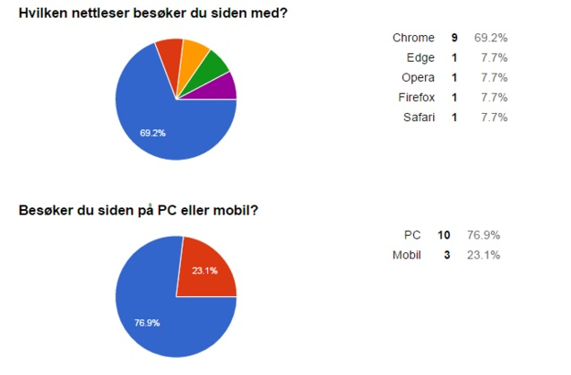
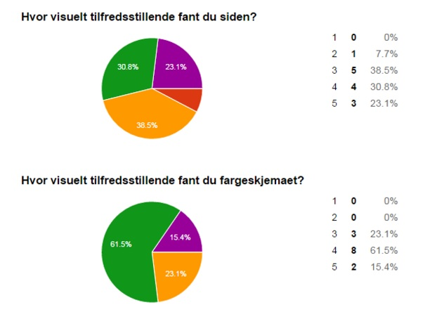
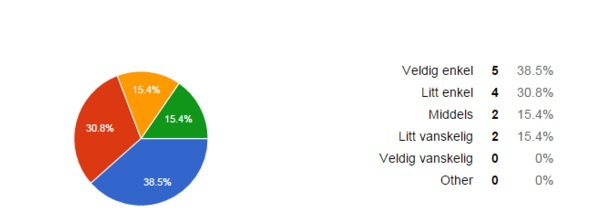

Contact person: Sup Er. K. Ewl, CEO
Client: MegaSuper Industries Incorporated
Website name: MegaSuper INC.
Link to page
Our form contains the following four main sections:
We made the feedback form right after we completed the website
We posted the link for our Google Form on Facebook and also emailed it to potential attendees.
Our testers had a wide variety of technical interest and background:
61.6% of our testers were within the target audience of 25+ and 77% were somewhat or very interested in technology, which is a desireable trait considdering the company is based around high-tech products
The testers used the following platforms (devices and browsers): Chrome, Edge, Opera, Firefox, Safari
The most popular platform was: PC with 76.9% of the users while the most popular browser was Chrome with 69.2% of the users
23.1% of the users used mobile platforms
Charts of users by devices:
The majority of the testers responded that they thought the design was pleasing. The color-scheme was welcomed by our testers, with 0% saying it was very unsatisfying or a little unsatisfying.
Only two persons (15,4%) said they had huge difficulties navigating from one page another. The rest of the testers said it was fairly easy to navigate. The survey also asked the user to specify how they found navigation and usability for each page on the website. Most testers were pleased, answering one of the three most positive feedback alternatives, but for some sites 1-2 testers said they had “some difficulty” to navigate the different the pages.
In the additional comment section, testers had a lot to say. Three testers did not a once understand the navigation bar completely. The testers thought the subpages were the only pages for the corresponding tab in the navigation bar, and did not at first understand that the main page itself was a page. Example: when you hover over support in the navigation bar, you can select between three subpages. The testers did not at first understand that support also is a page on its own. One person said that there were “too many impressions” on the homepage, however, the tester thought the page looked nice. People liked that our page detects if you are using a mobile device and that it informs about the condition of the mobile-friendly site. One tester was uncertain how to decide which manual and driver to download. Another tester said that the form for questions at the support-site was easy to use and user friendly.
The constructive feedback was interesting and is important for implementing future changes. After taking the feedback into consideration, we plan to make a couple of changes to the website. The changes will make it easier to navigate the website, and improve the design, content and usability. One possibility to improve navigation is to have the main tab in the navigation bar take the same color as the drop down menu, and to make the main tab a more integral part of the part that drops down. Also, though this was not raised as an issue due to a pop-up warning message, we would try to make a mobile-friendly version of the page, since a lot of users today are visiting web-pages on their smartphones or tablets. We would also like to include a bit more air at the main page, since it could give the impression of being a bit cluttered. Still, we are, in fact, very satisfied with our design, and are pleased to see that most of our testers agree.
We have learned a lot about both web development, meeting customer requirements, designing and group work during this project. It is important to work with the project often to keep the workflow going. We used Git as a tool to be able to work individually with the webpage, and then easily put it back together. We found this work method very useful. In the P2 document, we planned work division and deadlines, which proved to be more helpful than we first thought. Some tasks changed, but the work division remained the same for the most part. For those tasks where it did not, we were able to shift the workload in such a way that when people were done they could help out with the tasks people were struggling with. The difficulties with sharing code and merge conflicts were challenging and proved a strain on the workflow at times, but as we learned more about how to utilise Git correctly it was a tremendous help in creating our site. We also were a bit sceptical of the mock-up images we had to make in P2_design. It seemed like a lot of work and a bit unnecessary, since we would have to create the pages again in the coding phase anyways. But the images actually turned out to be a great help in the implementation phase of the project, and we understood then the purpose of creating them in the first place. Most of our pages turned out very similar to how we planned, and it was a bit reassuring to have something to look after as we started coding the project. We learned that good planning is a key element in a project, and that it actually makes the coding phase a lot easier.